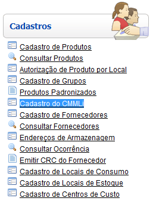
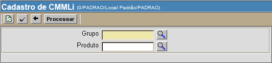
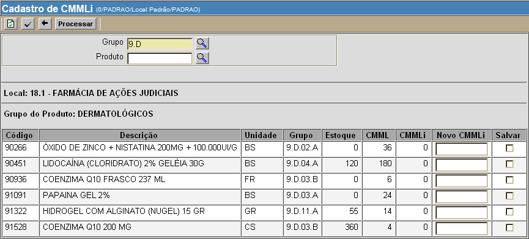
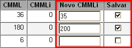

Cadastro de CMMLi [ Voltar ]Utilize este formulário para informar manualmente o consumo médio mensal local de um produto.O formulário "Cadastro de CMMLi" encontra-se dentro do menu "Cadastros". 
Após clicar no nome do formulário, o sistema abrirá a seguinte tela: 
Para especificar manualmente os consumos médios mensais para o local, siga os passos abaixo: 1º Passo: informe o grupo/produto para o qual deseja realizar o cadastro de CMMLi. Clique no botão  [Procurar] para
selecionar o grupo e produto a partir de uma lista de grupos/produtos
cadastrados. [Procurar] para
selecionar o grupo e produto a partir de uma lista de grupos/produtos
cadastrados.2° Passo: clique no botão  para processar
a pesquisa. para processar
a pesquisa. 
3° Passo: especifique o novo valor de CMML e marque a opção "Salvar". No campo "Novo CMMLi" digite o consumo informado e marque a apção "Salvar" para os novos valores de consumo (ver imagem abaixo). 
4° Passo: clique no botão para concluir a alteração de consumo médio mensal local. |